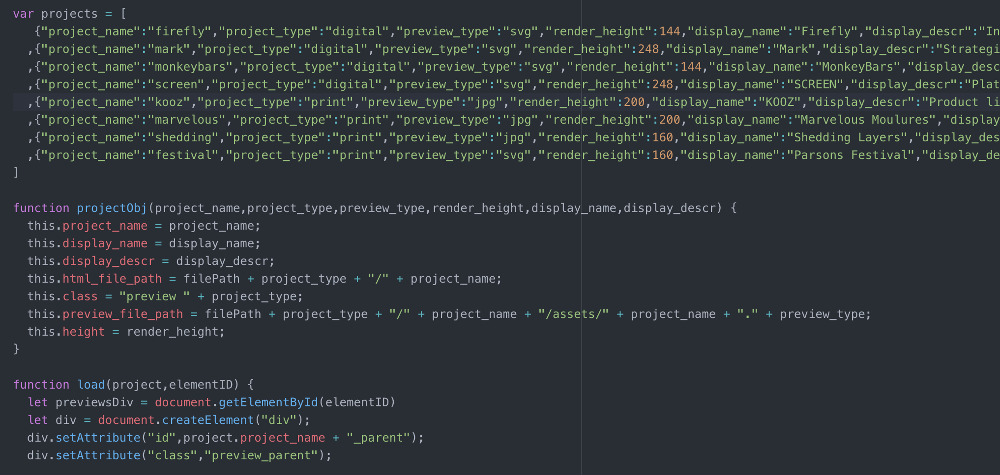

This website showcases the portfolio of Samia Husari – a multifunctional designer, artist, and Parsons School of Design colleague.
Samia is a talented designer, gifted artist, and a dear friend who I worked closely with during our time at the Parsons School of Design, where she graduated as an honors student with a Masters in Communication Design. I helped her build a portfolio site from scratch to showcase her impressive work across both digital and print mediums.

Samia's inital concept sketches communicated the structure and functionality she wanted – first, a landing page laid out like cards strewn across a table in a random but readable arrangement

Behind each preview image, there needed to be a two-sentence project description available on hover and a link to a full portfolio write-up on click

Filters also needed to narrow the work displayed to either print (shown here) or digital projects

An about section layers on top of the projects when selected, showing us a picture a quick bio of Samia

Project write-ups needed to break the column-based grid layout of full portfolio pages, with users being able to click and drag these write-ups to rearrange the page format on the fly
Partner: Samia Husari
Tools: CSS / Flexbox / gulp / HTML / JavaScript / node / Sketch
I wanted to make this website as low touch as possible for Samia, allowing her to have a fully customized website built from scratch without requiring her to be overly hands-on with the technical implementation or manage all the code herself. So, I set up some light automation in how I arranged the structure of the webpage's code and the data structure for her projects.
I implemented a relatively low-lift object-oriented approach, establishing a list of projects for Samia to fill in and a structure for how the project's repository would be organized.
This allowed Samia to only edit this one part of the code – all she needed to do was simply update this list with some basic parameters about her project (like the project name, some info about the preview image, and some descriptive text associated with that project). The project preview, description, and link to the full write-up page for that project would then be automatically populated on her main landing page.
I used a pure-JS approach to Samia's webpage, avoiding dependencies on external libraries, to provide a stripped-down webpage structure that had all the functionality she needed while remaining true to the aesthetic and functionality she laid out in her initial design sketches.

The landing page for Samia's website is dynamic, never showing the same view twice. Her projects distributed evenly across the page horizontally, but are arranged in a random order. Each project preview's vertical position is also randomly generated while being fully contained within the visible viewport.
Channeling Samia's metaphor of having portfolio that allowed her to really "lay all of her cards on the table", I added a quick animation to her main landing page. When this page is loaded or refreshed, her projects are strewn across the view in a way that resembles throwing a deck of cards across a playing surface.
Filters on the main landing page allow the user to see only print or digital projects, along with Samia's bio. If none of these options are selected, there is a surprise Easter egg for the user, who can watch an animation of one of Samia's doodles.
Each project preview image acts as a link to the project's full portfolio entry, with the project title and a two-sentence description available on hover.
The full portfolio pages for each project use Flexbox to create a simple, flexible column layout. Preestablished classes allow Samia to use a variety of arrangements that differed for each project – she wanted to be able to arrange her project's multimedia assets in two main ways: either spanning across the page's full horizontal width or in a three-column layout (with only one column at a time containing these pictures or videos).
Samia's text write-ups within her full portfolio pages are also interactive and spur playful engagement. Users can click and drag the position of this text to create their own unique, customized view of each project.
Samia's website needed to also work on mobile devices. The cards for each project on her main landing page are arranged in a vertical stack on mobile devices, foregoing the random positioning and animation. Her full portfolio pages for each project also use the same vertical column approach with all pictures, videos, and text stacking on top of one another. The click-and-drag functionality on text write-ups within portfolio pages is also disabled on mobile, allowing users to scroll through the page without a confusing or counter-intuitive experience.
The Migration of Art

Like this project? Want to get in touch? Reach out!